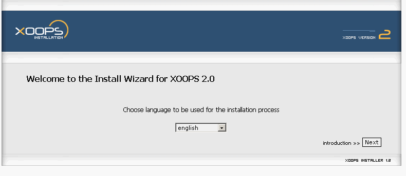
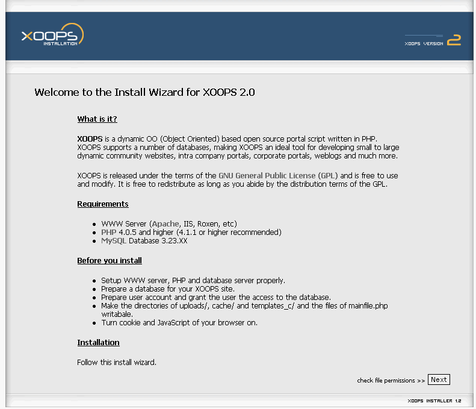
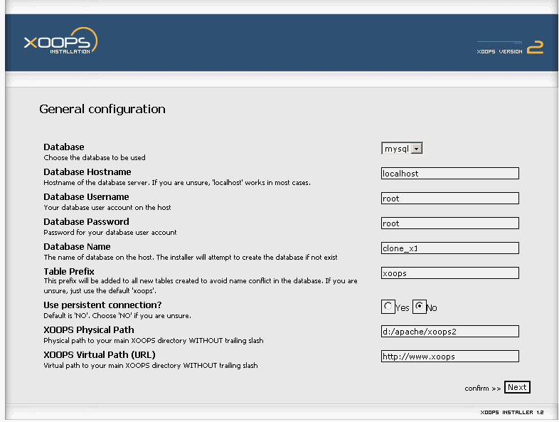
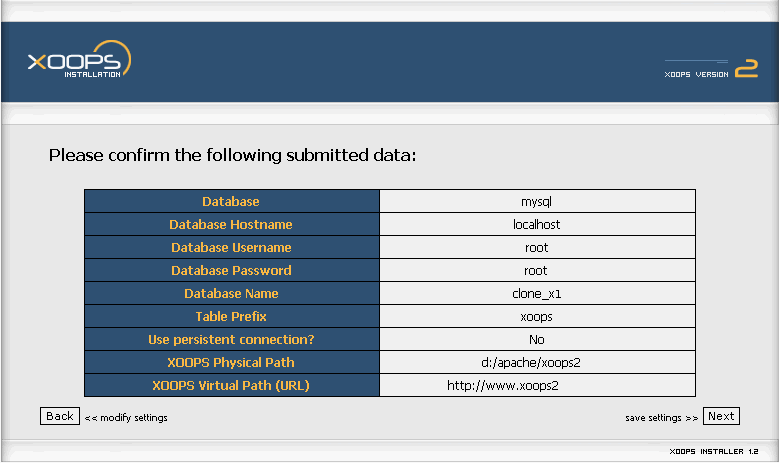
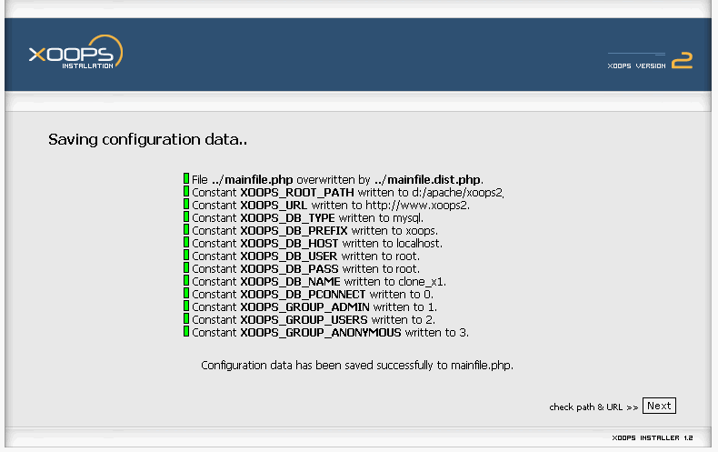
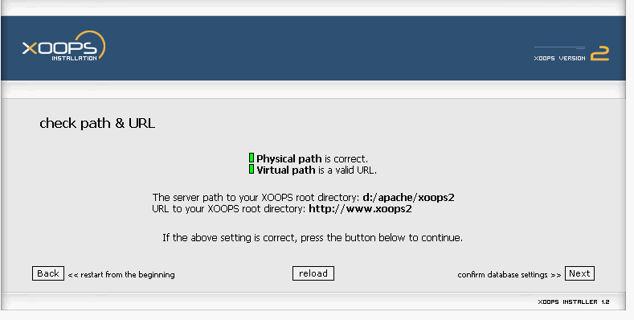
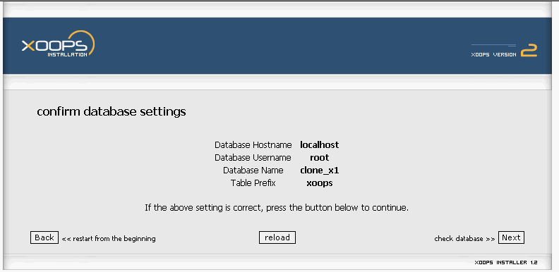
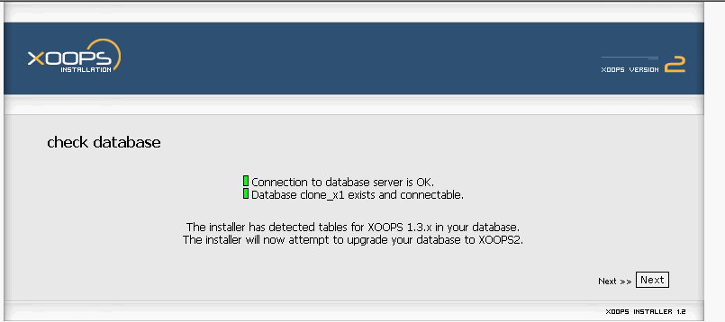
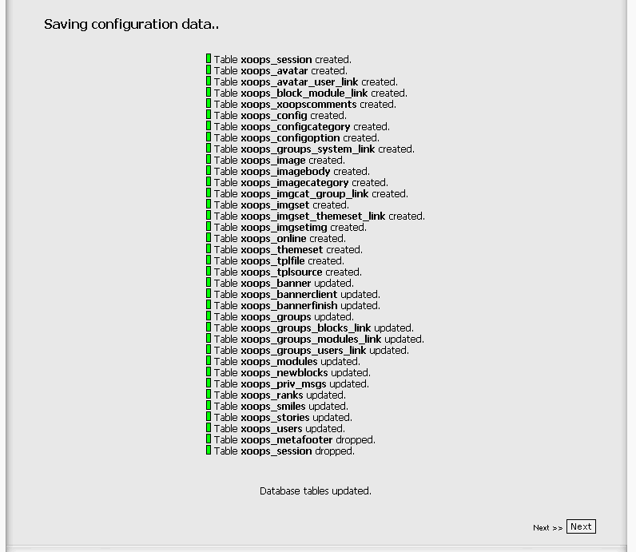

Installing XOOPS
First time installation
Preface:
Before begining the install process, we (the XOOPS team) ask that you have a good understanding of how to install and support server/hosted based software. As with anything in life, there's no easy answer or way. Sinice XOOPS is server based, it's not as easy to install as normal desktop software which in itself can be daunting to install so, please be familiar with setting up and installing the software listed below. Be familiar with how to configure CGI scripts and HTTP server software. It can easily be demonstrated that 80% of our support questions wind up being improper configurations with the server componenets or two pieces of software conflict. No two servers are configured alike.To install XOOPS for the first time, you'll need to have the minimum following server software pre-installed:
* HTTP Server (Apache or IIS) "Note, XOOPS only officially supports Apache"
* PHP 4.1.0 and higher (4.1.1 or higher recommended)
* MySQL Database 3.23.XX
* PHP 4.1.0 and higher (4.1.1 or higher recommended)
* MySQL Database 3.23.XX
Before starting the install, be sure to have:
* Setup the HTTP, PHP and database server properly.
* Create a database for your XOOPS 2 installation
* The ability to set the following directories and files world writeable: uploads/, cache/ and templates_c/ and the file mainfile.php
* Turn cookie and JavaScript? support in your browser on.
* Create a database for your XOOPS 2 installation
(Have your hosting company create one if you can't. The install script does provide this capability with the proper privileges).
* A user account with the proper database permissions.* The ability to set the following directories and files world writeable: uploads/, cache/ and templates_c/ and the file mainfile.php
* Turn cookie and JavaScript? support in your browser on.
Installing locally
If your running a local environment for development or testing, make sure that you have the previous requirements met. Once this is done, copy the contents of the HTML directory (from the XOOPS 2 distribution file or CVS) to the root document path of your web environment. Once the files are copied there, you can start the install by typing http://yoursite.com. This will start the install process.Installing on a hosted platform
If your running in a hosted environment, unpack the XOOPS 2 files locally or on the server if you have telnet or SSH access. Once you done this, make sure to move or copy all XOOPS 2 files from the HTML directory to your root web directory (your provider usually provides this location with directions). Once the files are copied there, you can start the install by typing http://yoursite.com. This will start the install process.Continuing the install
After performing the above procedures, your ready to continue installing XOOPS 2 with the Install Wizard. The first screen in the install Wizard takes you to will be the welcome screen.

Click the Next button to continue on to the next screen.
The next part of the install Wizard is designed to check your file and directory permissions. If your running in a Win32? environment, this should be a pretty painless install. If you running in a UNIX environment, the Wizard will display any problems and the corrective actions to take if there are problems.

If all lights are green on the Wizard, click Next to continue. If not, please read the screen and perform the necessary actions recommended by the Wizard
The next part of the Wizard is for writing the settings to the mainfile.php file.

The General Settings screen is self explanatory so, input the required information into the files and click next.
The next four Wizard screens are informational displaying the settings from the General Settings screen for your confirmation and to show that the values were written correctly.




If you seen any Red lights, please click the Back button to make the proper corrections.
The next Wizard screen is will be to show the progress for accessing the database.

If your in a hosted environment with out the proper access to create databases, please check with your provider for help in getting a database. If your provider (or you) created the database, all lights should be green. If you get a red light stating the DB does not exist and your user name has the ability to create databases, then click next and the install Wizard will attempt to create the database for you. If your user id does not have the rights to create a database, please correct this and continue the install. The next two screens are informational on trying to create and access the database. Click Next or Back depending on the Wizard screen.
After clicking next a couple of times, you will come to an informational screen showing the results of table creation. If there is a problem, please refer to the FAQ or XOOPS Forums for further assistance.

If all lights are green, your ready to proceed by clicking Next.
The next Wizard screen is for inputting site administrative information.

Please be careful here and write down or remember your administrative password. You'll need this after the install to continue setting up your XOOPS 2 site. Once you have completed inputting the correct information, click Next to continue. * Note, try to refrain from using names with spaces for the Admin name. *
The next screen is informational. If all the lights are green, click Next to continue.